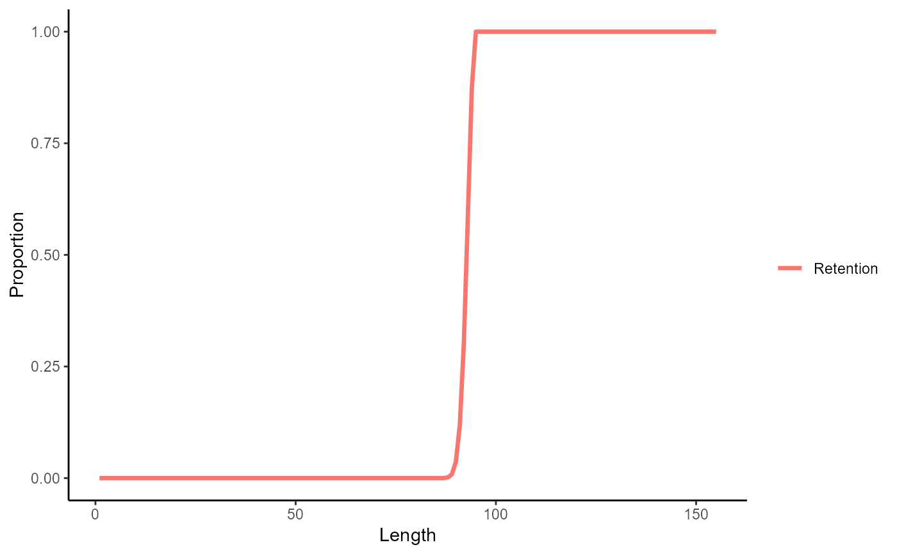

Size limit management procedures
matlenlim.RdA set of size-selectivity MPs that adjust the retention curve of the fishery.
matlenlim(x, Data, reps, plot = FALSE)
matlenlim2(x, Data, reps, plot = FALSE)
minlenLopt1(x, Data, reps, plot = FALSE, buffer = 0.1)
slotlim(x, Data, reps, plot = FALSE)Arguments
- x
A position in the data object
- Data
A data object
- reps
The number of stochastic samples of the MP recommendation(s)
- plot
Logical. Show the plot?
- buffer
Parameter controlling the fraction of Lopt to set the minimum length of fish caught: minlen=Lopt*(0.7+buffer).
Value
An object of class Rec-class with the Retention slot(s) populated
Details
The the LF5 and LFR slots in the Rec object are modified to change the
retention curve (length at 5 per cent and smallest length at full retention
respectively). A upper harvest slot limit can be set using the Rec@HS slot.
The underlying selectivity pattern of the fishing gear does
not change, and therefore the performance of these methods depends on the
degree of discard mortality on fish that are selected by the gear but not
retained by the fishery (Stock@Fdisc).
The level of discard mortality can be modified using the Rec@Fdisc slot
which over-rides the discard mortality set in the operating model.
The selectivity pattern can be adjusted by creating MPs that modify the selection
parameters (Rec@L5, Rec@LFS and Rec@Vmaxlen).
Functions
matlenlim: Fishing retention-at-length is set equivalent to the maturity curve.matlenlim2: Fishing retention-at-length is set slightly higher (110\ than the length-at-maturityminlenLopt1: The minimum length of retention is set to a fraction of the length that maximises the biomass, Lopt. The aim of this simple MP is restrict the catch of small fish to rebuild the stock biomass towards the optimal length, Lopt, expressed in terms of the growth parameters Lopt=b/(M/k+b) (Hordyk et al. 2015)slotlim: Retention-at-length is set using a upper harvest slot limit; that is, a minimum and maximum legal length. The maximum limit is set here, completely arbitrarily, as the 75th percentile between the new minimum legal length and the estimated asymptotic length Linf. This MP has been included to demonstrate an upper harvest slot limit.
Required Data
See Data-class for information on the Data object
matlenlim: L50
matlenlim2: L50
minlenLopt1: Mort, vbK, vbLinf, wlb
slotlim: L50, vbLinf
Rendered Equations
See Online Documentation for correctly rendered equations
References
Hordyk, A., Ono, K., Sainsbury, K., Loneragan, N., and J. Prince. 2015. Some explorations of the life history ratios to describe length composition, spawning-per-recruit, and the spawning potential ratio ICES Journal of Marine Science, doi:10.1093/icesjms/fst235.
Examples
matlenlim(1, MSEtool::Atlantic_mackerel, plot=TRUE)

#> LR5 LFR
#> 90.25 95.00
matlenlim2(1, MSEtool::Atlantic_mackerel, plot=TRUE)
 #> LR5 LFR
#> 99.275 104.500
minlenLopt1(1, MSEtool::Atlantic_mackerel, plot=TRUE)
#> LR5 LFR
#> 99.275 104.500
minlenLopt1(1, MSEtool::Atlantic_mackerel, plot=TRUE)
 #> LR5 LFR
#> 89.74689 99.71877
slotlim(1, MSEtool::Atlantic_mackerel, plot=TRUE)
#> LR5 LFR HS
#> 99.2750 104.5000 142.5475
#> LR5 LFR
#> 89.74689 99.71877
slotlim(1, MSEtool::Atlantic_mackerel, plot=TRUE)
#> LR5 LFR HS
#> 99.2750 104.5000 142.5475